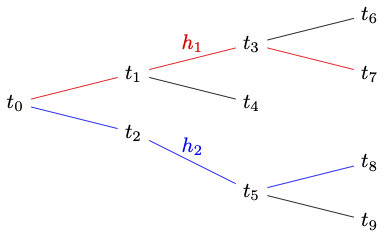

10 Tense and Choice
We will now pause to consider the interaction between time and necessity. It is not uncommon to take past and future to enjoy a different status. The past is fixed, unalterable, and closed. The future, on the other hand, is open.
Some have argued that there is no such asymmetry between past and future. If you insist that the past is closed, then you will have to grant that the future is similarly closed. This is supposed to be the lesson of a variety of ancient arguments from the Stoics to Aristotle to Ockham.
Consider the argument:
- If there will be a sea battle tomorrow, then it has always been the case in the past that there would be a sea battle tomorrow.
- If it has always been the case in the past that there would be a sea battle tomorrow, then necessarily, it has always been the case that there would be a sea battle tomorrow.
- If necessarily, it has always been the case in the past that there would be a sea battle tomorrow, then necessarily, there will be a sea battle tomorrow.
- So, if there will be a sea battle tomorrow, then necessarily so.
If whatever is the case in the past is necessary, then whatever is the case in the future is likewise necessary. There is no asymmetry between the past and the future.
We have the means to regiment the argument in a multi-modal language in which we help ourselves to both tense and necessity operators.
\[ \begin{array}{lllll} 1 & & \textsf{F} p \to \textsf{H}\textsf{F} p & & \\ 2 & & \textsf{H}\textsf{F} p \to \Box \textsf{H}\textsf{F} p & & \\ 3 & & \Box \textsf{H}\textsf{F}p \to \Box \textsf{F} p & & \\ 4 & & \textsf{F}p \to \Box \textsf{F} p & & \\ \end{array} \]
The challenge is to make sense of the asymmetry between past and future. One way to model a state of affairs in which the past is closed but the future is open is by means of a tree:

There are, for each moment of time, many different ways forward through the tree but only one way back. A moment of time is a member of several paths, which correspond to alternative histories. Each such history determines a possible future for the given time. Suppose the present moment of time is \(t_0\), and that a sea battle takes place at a time found in \(h_1\) but not at a time found in \(h_2\). For example, there is a sea battle at \(t_1\), but there is no sea battle to be found at a time in \(h_2\). Then, at \(t_0\), it is open whether there will be a sea battle once in the future. There will be one if \(t_1\) turns out to be a future time with respect to \(t_0\), but none if every future time turns out to lie within \(h_2\).
10.1 Branching Time
A flow of time frame \((T, <)\) is a tree if, and only if,
- \(<\) is transitive on \(T\): \(u <v \wedge v <t \to u < t\)
- \(<\) is \(L\)-total: \((v <u \wedge t <u) \to (t < v \vee t = v \vee v <t)\)
- \(<\) is irreflexive: \(u \not < u\)
We interpret \(u <t\) to mean that \(t\) is a possible future for \(u\).
A history is a complete path through a tree.
A set of times \(h \subseteq T\) is a history if, and only if,
\(h\) is \(R\)-total:
\[ \forall u, v \in h (u < v \vee u = v \vee v < u) \]
\(h\) is a maximal \(R\)-total subset of \(T\).
If \(h\subseteq U \subseteq T\), then \(U\) is not \(R\)-total.
If \((T, <)\) is a tree and \(t \in T\), we will say that \(h\) is a history through \(t\) if \(t \in h\). We will use \(H_t\) to denote the set of histories through \(t\) based on \((T, <)\).
The question of whether \(\textsf{F}p\) is true at a time \(t\) now depends on how the future turns out to be, which is settled differently by each history through \(t\). So, truth will be relative to ordered pairs of moments and histories. That is, a valuation \(V\) will map an atom like \(p\) to a set of ordered pairs of the form \((t, h)\), where \(t\) is a member of \(h\) and \(h\) is a history through \(t\). We will generally write \((t, h)\) as \(t/h\) for short.
A branching time model is a model of the form \((T, <, V)\), where:
- \((T, <)\) is a tree
- \(V\) is a valuation that maps each atom to a set of ordered pairs of the form \(t/h\).
We may now define truth at a pair \(t/h\) in a branching time model:
The clauses for atoms and propositional connectives are straightforward:
\[ \begin{array}{lll} (T, <, V), t/h \Vdash p & \text{iff} & t/h \in V(p)\\ (T, <, V), t/h \Vdash \neg \varphi & \text{iff} & (T, <, V), t/h \nVdash \varphi\\ (T, <, V), t/h \Vdash \varphi \to \psi & \text{iff} & (T, <, V), t/h \nVdash \varphi \vee (T, <, V), t/h \Vdash \psi\\ \end{array} \]
Tense operators, on the other hand, require one to look only at times within a given history. For \(\textsf{F}\varphi\) to be true at a pair \(t/h\), there must be a future \(\varphi\)-time \(u\) within the history \(h\). \(\textsf{P}\varphi\) is true at a pair \(t/h\) just in case there is a past \(\varphi\)-time \(u\) within the history \(h\).
\[ \begin{array}{lll} (T, <, V), t/h \Vdash \textsf{F} \varphi & \text{iff} & \exists u \in h \ (t < u \wedge (T, <, V), u/h \Vdash \varphi)\\ (T, <, V), t/h \Vdash \textsf{P} \varphi & \text{iff} & \exists u \in h \ (u < t \wedge (T, <, V), u/h \Vdash \varphi)\\ \end{array} \]
We are now in a position to interpret the necessity operator \(\Box\) as follows: \(\Box \varphi\) is true at \(t/h\) just in case \(\varphi\) is true at \(t/k\) for every history \(k\) through \(t\). In other words, \(\varphi\) is true at $t/h$ no matter how the future turns out to be; \(\Diamond \varphi\), on the other hand, is true at \(t/h\) if there is a way the future may turn out to be on which \(\varphi\) is true.
\[ \begin{array}{lll} (T, <, V), t/h \Vdash \Box \varphi & \text{iff} & \forall k \in H_t \ (T, <, V), t/k \Vdash \varphi\\ \end{array} \]
On the interpretation of the modal operator we have given, we find that the logic of historical necessity is \(\textsf{S5}\), which extends \(\textsf{K}\) with axioms \(\textsf{T}\) and \(\textsf{5}\).
\[\begin{array}{lll} \Box p \to p & & \textsf{T}\\ \Diamond p \to \Box \Diamond p & & \textsf{5}\\ \end{array} \]
One way to think of this is as follows: \(\Box \varphi\) is true at \(t/h\) only if \(\varphi\) is true at every pair of the form \(t/k\) for which \(t \in h \cap k\). But the accessibility relation between such pairs is reflexive, symmetric, and transitive.
Consider a tree frame \((T, <)\). If \((T, <, V), t/h \Vdash \Box \varphi\), then for all \(k \in H_t\), \((T, <, V), t/k \Vdash \varphi\). But since \(h\) itself is a history that contains \(t\), \((T, <, V), t/k \Vdash \varphi\).
On the other hand, if \((T, <, V), t/h \Vdash \Diamond \varphi\), then for some \(k \in H_t\), \((T, <, V), t/k \Vdash \varphi\). But now, if \(l \in H_t\), then \((T, <, V), t/l \Vdash \Diamond \varphi\). So, \((T, <, V), t/h \Vdash \Box \Diamond \varphi\).
To make sure we build the asymmetry between past and future into the framework, we incorporate a further axiom to govern the interaction between tense and necessity:
\[ \tag{Open Future} \textsf{F}\Diamond \varphi \to \Diamond \textsf{F} \varphi \]
If a path opens once in the future, then it is open now.
On the other hand, we do not generally have:
\[ \textsf{P}\Diamond \varphi \to \Diamond \textsf{P} \varphi \]
For suppose it had been possible that there would be a sea battle once in the past. It does not follow that it is possible that a sea battle occurred in the past. That if no sea battle ever took place, then even if a sea battle could have been the case once in the past, it is now not open that a sea battle took place once in the past. From the mere fact that a path was open once in the past, it does not follow that the path remains open now.
To return to the sea battle argument, we find \(\textsf{H} \varphi \to \Box \textsf{H}\varphi\) — but not \(\textsf{G} \varphi \to \Box \textsf{G} \varphi\) — is valid in every tree.
Proposition 10.1 If \((T, <)\) is a tree frame, then \((T, <) \models \textsf{H} \varphi \to \Box \textsf{H}\varphi\)
Proof. Let \(V\) a valuation for a tree frame \((T, <)\). Then:
\[ (T, <, V) \Vdash \textsf{H} \varphi \to \Box \textsf{H}\varphi \]
For suppose \((T, <, V), t/h \Vdash \textsf{H}\varphi\). For all \(u < t\), \((T, <, V), u/h \Vdash \varphi\). But now, let \(k\in H_t\). Since \(k\) and \(h\) agree up to \(t\), we find that for for all \(u < t\), \((T, <, V), u/k \Vdash \varphi\). So, \((T, <, V), t/k \Vdash \textsf{P}\varphi\), which means that \((T, <, V), t/h \Vdash \textsf{P}\varphi\).
On the other hand, it is not difficult to falsify \(\textsf{G} \varphi \to \Box \textsf{G} \varphi\) in a tree frame. The reason is simple. Even if \(\textsf{G}\varphi\) is true at \(t/h\) in virtue of the fact that \(\varphi\) is true at \(u/h\) for some later \(u \in H\), there is no guarantee that \(\varphi\) will be true at later times \(u\) of an alternative history \(k\) of which \(t\) is a member. So, there is no reason to expect \(\textsf{G}\varphi\) to be true at every pair of the form \(t/k\) with \(t \in k\).
10.2 Choice
We now introduce a family of propositional operator designed to express individual choices. For each agent \(i\), we introduce the operator \(\textsf{stit}_i \varphi\), read: “agent \(i\) sees to it that \(\varphi\).” The fact that \(\varphi\) is true at \(t/h\) is guaranteed by some prior choice made by the agent \(i\).
The basic thought is that at a given time an individual agent can make choices which rule out at least some potential futures. That is, when \(i\) carries out an action at a pair \(t/h\), \(i\) is able to rule out some histories through \(t\).
Given a tree \((T, <)\), a choice function \(C\) maps each agent \(i\) and time \(t\) in \(T\) into a partition \(C^t_i\) of the set of histories \(H_t\) through \(t\).
An equivalence class in \(C^t_i\) is called a choice cell. If two histories \(h\) and \(k\) in \(H_t\) belong in \(C^t_i\), then they will agree up to the time \(t\) but perhaps not at times later than \(t\).
Given a history \(h\), \(C^t_i(h)\) is the choice cell to which \(h\) belongs. Since \(C^t_i\) partitions the domain into a number of mutually exclusive and jointly exhaustive equivalence classes, each history will belong to exactly one such choice cell.
The choice function \(C^t_i\) encodes the actions open to the agent \(i\) at \(t\), and to think of each choice cell or equivalence class generated by \(C^m_i\) as an action open to \(i\) at \(t\). That is, \(C^m_i(h)\) is the action associated with the choice cell to which \(h\) belongs.
A \(\textsf{stit}\) model is a structure \((T, <, C, V)\), where:
\(C\) is a choice function for \((T, <)\)
\(V\) maps each atom \(p\) to a set of ordered pairs of the form \(t/h\).
The clauses for atoms, negation, and conjunction are straightforward:
\[ \begin{array}{lll} (T, <, C, V), t/h \Vdash p & \text{iff} & t/h \in V(p)\\ (T, <, C, V), t/h \Vdash \neg \varphi & \text{iff} & (T, <, V), t/h \nVdash \varphi\\ (T, <, C, V), t/h \Vdash \varphi \to \psi & \text{iff} & (T, <, V), t/h \nVdash \varphi \vee (T, <, V), t/h \Vdash \psi\\ \end{array} \]
There are two choices for the evaluation of a \(\textsf{stit}_i\) operator, which give rise to two variations on the operator:
\[ \begin{array}{lll} (T, <, C, V), t/h \Vdash \textsf{cstit}_i \varphi & \text{iff} & C^t_i(h) \subseteq \{h/t: h/t \Vdash \varphi\}\\ (T, <, C, V), t/h \Vdash \textsf{dstit}_i \varphi & \text{iff} & C^t_i(h) \subseteq \{h/t: h/t \Vdash \varphi\} \wedge \{h/t: h/t \Vdash \varphi\} \neq H_t\\ \end{array} \]
The clause for the \(\textsf{cstit}_i\) operator— or the Chellas \(\textsf{stit}\)-operator— amounts to this: \(\textsf{stit}_i \varphi\) is true at \(t/h\) iff \(\varphi\) is true throughout the choice cell corresponding to \(h\). That is, \(\varphi\) is true in every history associated with the action \(C^t_i(h)\).
The clause for the \(\textsf{dstit}_i\) operator— or the deliberative \(\textsf{stit}\)-operator— requires more. Not only is \(\varphi\) true throughout the choice cell corresponding to \(h\), but, furthermore, \(\varphi\) must fail at some history through \(t\).
The two operators are interdefinable in terms of historical necessity:
\[ \begin{array}{l} \textsf{dstit}_i \ \varphi \leftrightarrow \textsf{cstit}_i \ \varphi \wedge \neg \Box \varphi\\ \textsf{cstit}_i \ \varphi \leftrightarrow \textsf{dstit}_i \ \varphi \vee \Box \varphi \end{array} \]